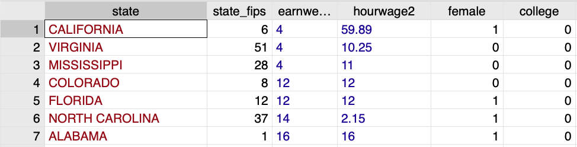
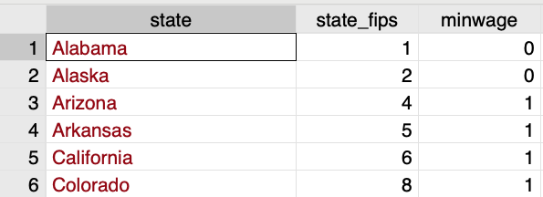
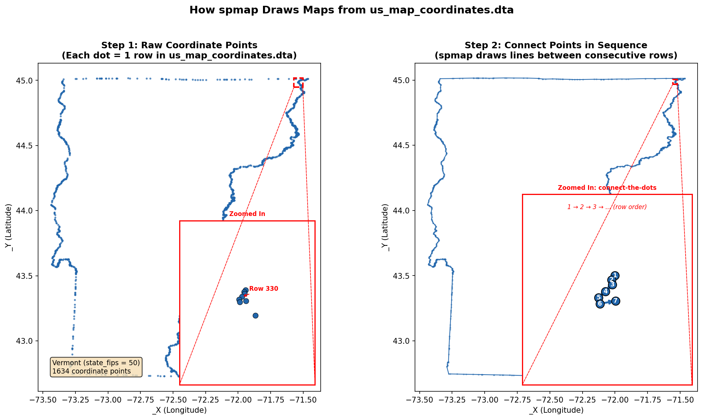
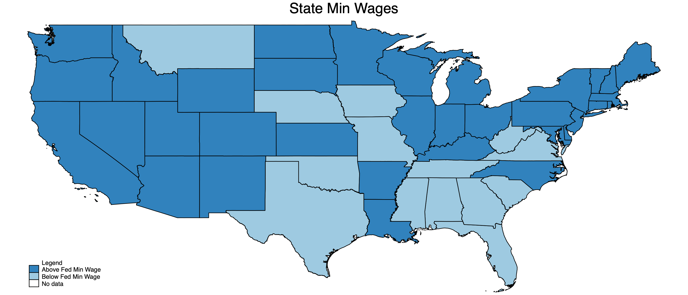

** Set Path **
cd "/Users/egong@middlebury.edu/Library/CloudStorage/Dropbox/Middlebury/Course_Archieve/Spring_2026/ECON_0111/2_Assignments/Labs/Lab_6_Maps_Merge"ECON 111 - Lab 6 : Merging and Maps
Minimum Wages
Preliminaries
Before beginning this lab, make sure you’ve:
Created a folder “Lab 6”
Downloaded the necessary data into the folder from the course site
Install the following using
ssc install spmapandssc install shp2dtaandssc install mif2dta
Current Population Survey (CPS)
The dataset “cps_wage_2021.dta” is a clean version of the CPS in 2021 and contains basic demographic information and wage data. It has 6,156 individual level observations from 50 states.
use cps_wage_2021.dta, clear
des
sum
Contains data from cps_wage_2021.dta
Observations: 6,156
Variables: 6 21 Mar 2024 12:38
-------------------------------------------------------------------------------
Variable Storage Display Value
name type format label Variable label
-------------------------------------------------------------------------------
state str20 %20s
state_fips byte %8.0g state (fips code)
earnweek2 int %8.0g EARNWEEK2
weekly earnings (rounded)
hourwage2 double %12.0g HOURWAGE2
hourly wage (rounded)
female float %9.0g 1 if Female
college float %9.0g 1 if college degree
-------------------------------------------------------------------------------
Sorted by:
Variable | Obs Mean Std. dev. Min Max
-------------+---------------------------------------------------------
state | 0
state_fips | 6,156 28.44136 16.19952 1 56
earnweek2 | 6,156 784.6826 531.0523 4 2885
hourwage2 | 6,156 19.97374 10.75531 .55 59.89
female | 6,156 .5155945 .4997973 0 1
-------------+---------------------------------------------------------
college | 6,156 .2277453 .4194114 0 1Q1: Examine hourly wages. Is there anything that looks strange? What do you make of it?
sum hourwage2, detailState Level Minimum Wages
The dataset “state_minwage.dta” has data on whether state minimum wages are above or below the federal level. Federal minimum wage overrides state min wages. Thus states with min wages below the federal level will have min wages set to the federal level.
use "state_minwage.dta", cleardes
Contains data from state_minwage.dta
Observations: 51
Variables: 3 21 Mar 2024 12:38
-------------------------------------------------------------------------------
Variable Storage Display Value
name type format label Variable label
-------------------------------------------------------------------------------
state str20 %20s state
state_fips byte %10.0g state fips code
minwage byte %10.0g =1 if above Fed min Wage
-------------------------------------------------------------------------------
Sorted by: stateQ2 How do you interpret the variable “minwage”? What STATA commands should you use to understand the variable?
Merge CPS to State Min Wages
We now want to link/connect the cps data with state-level min wages. To do this, we need to find a variable to match on.


Q3: Which variable should we use to link or merge the two datasets together?
To do the merge, first start with the cps data which has individual-level observations.
use cps_wage_2021.dta, clearQ5: When we start with the cps wage data, why do we then need to do a many to one merge with the state-level minimum wage data? What will need to change if you start with the state-level minimum wage data and then need to merge the cps wage data?
Q6: Show the joint distribution between minimum wage laws and hourly wages. I provide code below. Before you execute the code, see if you can figure out which one is correct and why.
tab hourwage2 minwage, column
graph bar (mean) minwage, over(hourwage2) blabel(bar)
graph bar (mean) hourwage2, over(minwage) blabel(bar)
twoway (scatter hourwage2 minwage ) (lfit hourwage2 minwage)
graph box hourwage2, over(minwage)Individual Level => State Level Data
We have 6156 individual observations. Suppose we want to look at avg wages on a state-level. To “aggregate” the data we can use the collapse command. Take a look at the data using des and sum before running collapse.
collapse (mean) hourwage2 minwage, by(state_fips)
save state_wage.dta, replacefile state_wage.dta savedQ7: What happened to the dataset? How do you interpret “hourwage2” and “minwage” now?
Map Making
We can now generate a map to show the spatial variation in state minimum wages. The spmap command takes a variable and then uses a dataset “us_map_coordinates” that contains all of the boundaries for US states. The id(state_fips) option links our data to the map coordinates using the state FIPS code.
use state_wage.dta, clear
spmap minwage using us_map_coordinates, id(state_fips)Ah, Alaska and Hawaii make drawing the map challenging! Let’s drop those two states.
drop if state_fips==15
drop if state_fips==2
spmap minwage using us_map_coordinates, id(state_fips)Now, let’s work on presenting it well. Typically I just experiment with the code until I get a map that I’m happy with.

Q8: Before running the code, see if you can predict what the added code will do. Note the /// allows you to write a single line of code over multiple lines. This is helpful when your code is very long.
spmap minwage using us_map_coordinates, id(state_fips) ///
fcolor(Blues) ///
legend(label(2 "Below Fed Min Wage") label(3 "Above Fed Min Wage")) legtitle("Legend") ///
title(State Min Wages)
graph export "US_Min_Wage.png", replaceQ9: What patterns do you notice with state minimum wages? What factors do you think explain this geographic variation?

Additional Mapping Resources
If spatial data and mapping is of interest, you can explore more about this topic:
- STATA spmap FAQ: https://www.stata.com/support/faqs/graphics/spmap-and-maps/
- STATA Blog — county-level choropleth maps: https://blog.stata.com/2020/04/07/how-to-create-choropleth-maps-using-the-covid-19-data-from-johns-hopkins-university/